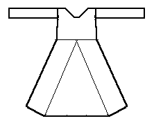

According to the typology given in Nockert, Type 3 Tunics are typified as
"Garments comprising two straight cut main pieces -- front and back -- joined together with a shoulder seam. Gores inserted in the middle of the main pieces. No side gores. Sleeve design indeterminate. Neck slitscan occur."
There are two examples of this type of tunic; both inner garments from Herjolfsnes, including one worn by a child, including Herjolfsnes no.7.
Go to Tunic Page or Proceed
Some Clothing of the Middle Ages - Tunics - Type 3, by I. Marc Carlson, Copyright 1996, 1997. This code is given for the free exchange of information, provided the Author's Name is included in all future revisions, and no money change hands-